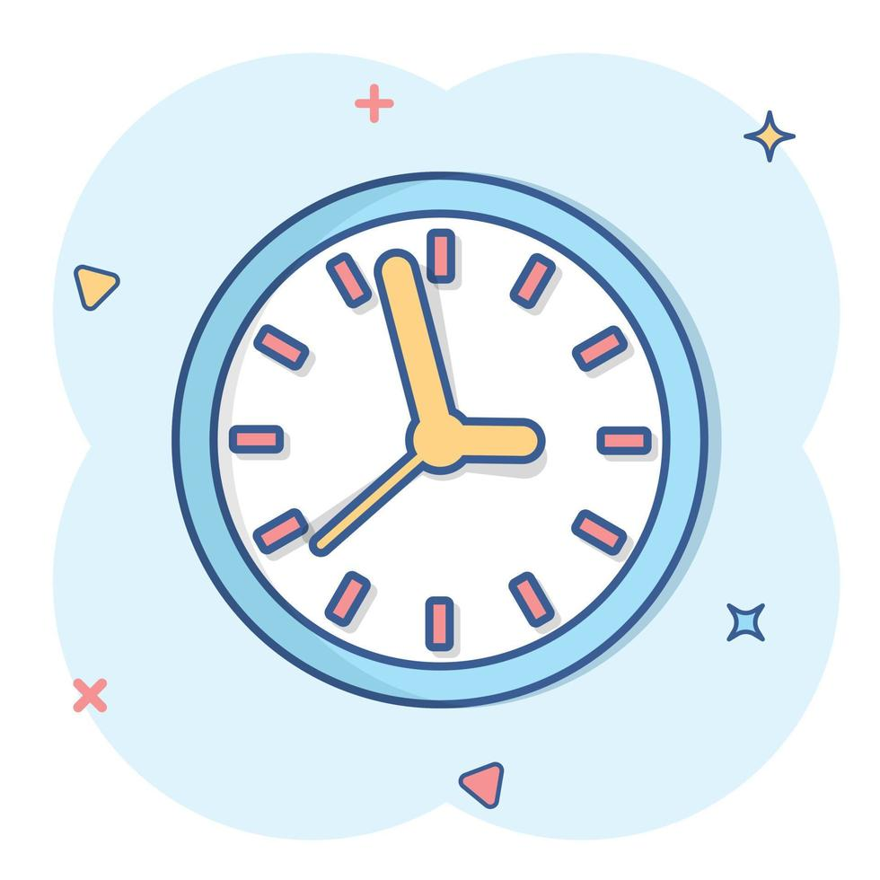

¿CÓMO DAR LA HORA EN INGLÉS? (HOW TO TELL THE TIME IN ENGLISH ?)
PRINCIPAL
INICIO
Search
¿para qué se usa o´clok?¿para qué se usa past?
Para decir cualquier hora en punto se dice o´clock:
It’s + number + o’clock
EJEMPLO: 1:00 Se dice it’s one o’clock
Para decir los números del 1 al 29 se dice past:
It’s + minute + past + hour
EJEMPLO: 1:05 Se dice it’s five past one
¿para qué se usa half past? ¿para qué se usa to?
Para decir que son las y media se diría half past.
It’s + half past + hour
EJEMPLO: 1:30 Se dice it’s half past one.
Para decir los números 31 al 59 se usa to
It’s + minute + to + hour
EJEMPLO: 1:35 Se dice it’s twenty five to two
¿para qué se usa quarter past ?¿para qué se usa quarter to ?
Para decir son las y cuarto se usa quarter past
Its+ quarter +past+ hour
EJEMPLO 1:15 Se dice its quarter past
Para decir que faltan un cuarto para tal hora se usa quarter to
Its +quarter +to +hour
Ejemplo 1:45 Se dice its quarter to two